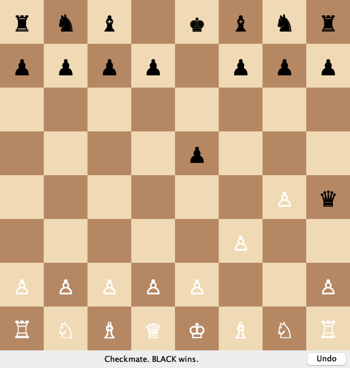
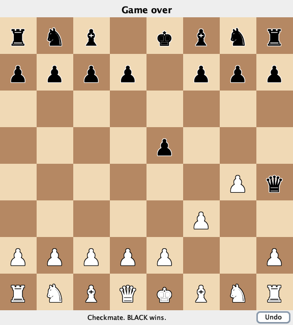
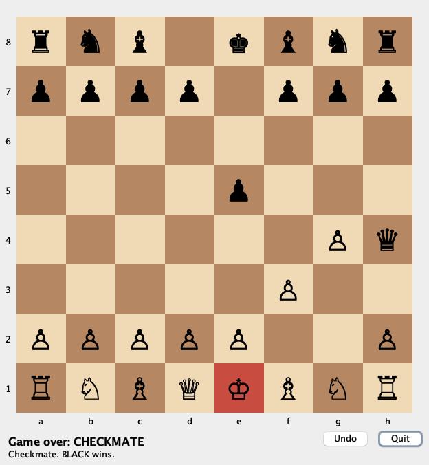

CSC 413 · Week 11 · Wednesday Nov 4 · on Zoom
San Francisco State University
| Our engine | Who writes it | |
|---|---|---|
| Model | Game and everything behind it | you, M1–M6 |
| Controller | GameController | you, M6 |
| View | BoardView: ConsoleView, EmojiView, … | given in M6; generated in M7 |
git diff --stat shows the new view and Main.game.play( in the view.start returns.| A chat | A coding agent | |
|---|---|---|
| Sees | what you paste | your repository |
| Changes files | you copy its answer in | it edits them |
| Runs the build and tests | you do | it does, and reads the result |
| Can change a file you didn't mean | only if you paste it | yes |
M7's goal is a coding agent run in your repository. A chat is allowed; the checks are the same.
Add a GUI to my chess game.
An agent, on an engine at the M6 state, before class:
src/main/java/edu/sfsu/csc413/chess/Main.java | 4 +-
.../java/edu/sfsu/csc413/chess/view/SwingView.java | 182 +++++++++++++++++++++
2 files changed, 185 insertions(+), 1 deletion(-)Did it break a rule?
No. It implemented BoardView and changed only Main. Nothing required it to.

"It compiles, and the existing tests pass. I never opened the window."
The tests don't test the view.
Opened: white pieces are hard to see on light squares.
Write one line you'd add to "Add a GUI to my chess game."
In the chat. Two minutes.
AGENTS.md: do# Instructions for coding agents
This is a chess engine built with MVC. The model and the controller are
written by hand and are finished. Your job is views only.
## Do
- Add views as new classes in `src/main/java/edu/sfsu/csc413/chess/view/`
or a new package under it.
- Implement the `BoardView` interface. Read it, `ConsoleView`, and
`PlayerAction` before writing anything.
- Read the game only through `Game`: `board()`, `sideToMove()`,
`legalMoves()`, `status()`, `history()`.
- Send every player action to the controller as a `PlayerAction`:
`controller.handle(new PlayerAction.Move("e2e4"))`.
- Add one `case` to `Main.chooseView` so the new view can be chosen from
the command line.AGENTS.md: don't, check, stop## Don't
- Don't change anything in `model/`, `engine/`, or `factory/`.
- Don't change `BoardView`, `PlayerAction`, `GameController`,
`ConsoleView`, or `EmojiView`.
- Don't call `game.play`, `game.undoLastMove`, or anything that changes
the game. Only the controller changes the game.
- Don't work out a chess rule in the view. Legal moves come from
`game.legalMoves()`; check and checkmate come from `game.status()`.
- Don't wait for input inside a click handler. A window's `start` builds
the window and returns; it never calls `controller.runLoop()`.
- Don't add dependencies to `pom.xml`. Swing is part of the JDK.
## Check your work
- `./mvnw test` passes, with no test changed or deleted.
- `git diff --stat` lists only new files under `view/` and `Main.java`.
## Stop and ask
If you think a file under "Don't" has to change, stop and explain why
instead of changing it.| Agent | Reads |
|---|---|
| Codex, Copilot, Gemini CLI, and most others | AGENTS.md in the project root |
| Claude Code | CLAUDE.md; one line, @AGENTS.md, includes the other |
| A chat | nothing: paste it at the top of your message |
Commit it. Every run starts from the same rules.
Add a graphical 2D view of the board using Swing. I want to play by clicking a piece and then clicking the square to move it to. Show whose turn it is and messages like check or illegal moves. Follow AGENTS.md.
Before it runs: which rule will it be tempted to break?
git diff --stat main
grep -rn "game.play\|undoLastMove\|runLoop" src/main/java/edu/sfsu/csc413/chess/view
./mvnw -q test
java -cp target/classes edu.sfsu.csc413.chess.Main swingvoid squareClicked(Position target) {
Optional<Move> move = game.findLegalMove(
selected.toString() + target);
move.ifPresent(game::play);
repaint();
}List<Position> knightTargets(Position from) {
int[][] jumps = {{1, 2}, {2, 1}, {2, -1}, {1, -2},
{-1, -2}, {-2, -1}, {-2, 1}, {-1, 2}};
List<Position> targets = new ArrayList<>();
for (int[] jump : jumps) {
Position to = from.offsetOrNull(jump[0], jump[1]);
if (to != null) {
targets.add(to);
}
}
return targets;
}public void start(GameController controller) {
this.controller = controller;
buildWindow();
controller.runLoop();
}List<Position> targetsOf(Position from) {
List<Position> targets = new ArrayList<>();
for (Move move : game.legalMoves()) {
if (move.from().equals(from)) {
targets.add(move.to());
}
}
return targets;
}| Rule | Caught by | |
|---|---|---|
| A | the view changes the model | searching for game.play |
| B | the view works out a rule (and ignores pins and occupied squares) | reading; a pinned knight lights up |
| C | a window waits for input | running it: nextAction() throws |
| D | fine: it asks the model | — |
String turn = game.sideToMove() == edu.sfsu.csc413.chess.model.Color.WHITE
? "White" : "Black";
status.setText(turn + " to move"
+ (game.status().name().equals("CHECK") ? " (check)" : ""));From the wish run. What would you change?
Compare the enum itself: game.status() == GameStatus.CHECK. A misspelled string compiles; a misspelled constant doesn't.
AGENTS.md, same request.Both: tests green, diff only under view/ and Main.

Run 1: one class, 234 lines

Run 2: two classes, 498 lines
| Run 1 | Run 2 | |
|---|---|---|
| Classes | SwingView | SwingView + BoardPanel (drawing) |
| Board | pieces only | coordinates, legal-move dots, king tinted in check |
| Promotion | always a queen | a row of buttons in the window |
| Buttons | Undo | Undo, Quit; closing the window quits |
| Top line after mate | "Game over" | "Game over: CHECKMATE" |
Run 2's report, on promotion:
No modal JOptionPane: it waits for input inside a click handler, which AGENTS.md forbids.
Is a promotion dialog what that rule meant?
No. The rule is about the game loop. If an agent follows a rule in a way you didn't mean, fix the rule.
git switch main
git switch -c m7-run-2
# start a new agent session, same AGENTS.md, one change| Generated by an agent | Not changed |
|---|---|
| A Swing view: a 2D board you play by clicking | model/, engine/, factory/ |
| At least one other view | GameController |
| Tests for the views, if you want them | BoardView, PlayerAction |
Acceptance: Monday's test 2. The diff is new view files and Main.
m7-submission.mdAGENTS.md and the requests you gave.Opens Mon Nov 9 · due Mon Nov 16.
A test: change one behaviour in the view by hand, without the agent. If you can't, read it until you can.
Monday's weather app gets a web page, written by a coding agent. Write one "do" and two "don't" lines for its instructions, and one check you'd run on its work.
M6 is due Monday at 11:59 PM. M7 opens Monday.